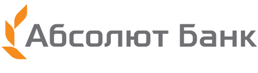
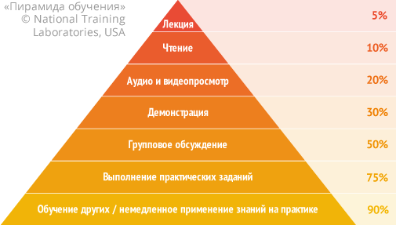

Онлайн-курсы по JavaScript-технологиям
Здесь находятся «правильные» курсы по профессиональному JavaScript и смежным технологиям. С теорией, ответами на вопросы, практикой, обратной связью по коду ("code review"). Каждый курс ведёт преподаватель - опытный действующий разработчик.
Качество
Это самое главное. Мы изучаем разработку на профессиональном уровне
Дистанционность
На практике это оказывается удобнее, чем очные курсы
Поддержка
Вы получите советы по развитию именно для вас
Результат
Цель курсов - получить конкретные результаты в плане знаний и умений
Гарантия
Возврат денег, если что-то не так
Основы веб-разработки
Курс "JavaScript/DOM/Интерфейсы" для новичков
Курс по профессиональному JavaScript для начинающих разработчиков, цель которого – научить думать на JavaScript, писать просто, быстро и красиво, создавать интерфейсные компоненты.
Продолжительность: 1.5 месяца, стоимость:
Курс "JavaScript/DOM/Интерфейсы" для программистов
"Продвинутый" курс по профессиональному JavaScript, с большим количеством нюансов и деталей JavaScript. Для тех, кто либо прошел курс "для новичков", либо имеет опыт программирования на другом языке от 1 года.
Продолжительность: 1.5 месяца, стоимость:
Курс по современной вёрстке
Курс по современной вёрстке, цель которого – сделать процесс вёрстки лёгким и понятным, научить создавать компоненты и избегать распространённых ошибок.
Продолжительность: 1 месяц, стоимость:
Мастер-класс по архитектуре и паттернам
Архитектура современных Frontend-приложений: паттерны, инструменты, приёмы проектирования
Продолжительность: 1 день, стоимость:
Фреймворки и другие технологии
Курс по Node.js
Профессиональная разработка на платформе Node.js (серверный JavaScript), с использованием современных фреймворков и технологий.
Продолжительность: 1.5 месяца, стоимость:
Курс по Angular
Профессиональная разработка на современном фреймворке Angular.
Продолжительность: 6 недель, стоимость:
Курс по React
Профессиональная разработка на React.
Продолжительность: 1.5 месяца, стоимость:
Курс по Vue.js
Профессиональная разработка на Vue.js.
Продолжительность: 1.5 месяца, стоимость:
Интенсив по TypeScript
Изучаем возможности TypeScript для увеличения эффективности и надёжности JavaScript-разработки.
Продолжительность: 2 дня, стоимость:
Интенсив по RxJS
Изучаем реактивное программирование с RxJS - продвинутую альтернативу промисам и событиям, встроенную в Angular и доступную для других фреймворков, а также отдельно от них.
Продолжительность: два дня, стоимость:
Как проходит обучение?
Обучение проходит онлайн.
- Встречи проходят по расписанию, на курсах это два раза в неделю, на интенсивах чаще. В процессе живого общения мы вместе изучаем сложные темы, разбираем домашнее задание, преподаватель дает ответы на вопросы.
- Дома участники изучают оффлайн-материалы, выполняют практическое задание. Как правило, есть также курсовой проект.
- Преподаватель проверяет все решения ("code review"), обращая особое внимание на качество кода. Пишет, если что не так.
- Между занятиями для общения есть также групповой чат, там же можно общаться с преподавателем или написать ему лично.
- Из технологий мы используем Zoom, GitHub, обычно также "песочница" и другие, в зависимости от курса.
- После занятий доступны записи, для повторения или просмотра в случае пропуска, но предполагается, что вы посещаете занятия. На этих курсах очень важно ваше активное участие, чтобы вы решали задания, задавали вопросы преподавателю, если что-то не получается. Только так будет хороший результат.
Более подробно детали вы можете посмотреть в программе конкретного курса.
Программа обучения на всех курсах очень насыщенная. Как правило, к нам приходят люди, понимающие толк в обучении, и проблем с этим нет. Но если кто-то отстаёт, мы поможем разобраться. Все, кто хочет научиться, успешно справляются.
Что говорят о курсах участники
Мы занимаемся обучением с 2007 года. За это время у нас обучились тысячи разработчиков из разных стран и компаний.
Все отзывы являются честными. Мы не модерируем их.


Гарантия
- Если объяснения будут вам непонятны
- Если курсы не дадут вам новых знаний и умений
- Если вы не сможете подключиться к системе онлайн-обучения
…то вы сможете получить деньги назад.
Для этого достаточно не позже окончания первой недели курса написать, что именно вас не устраивает, и тогда ваше участие будет прекращено, а вы получите деньги обратно.
Сертификат
По окончанию курсов каждый участник получает сертификат в электронном виде на русском и английском языках. Лицензия на обучение у нас тоже есть.
Мнение профессионалов
- Дмитрий Поляков
Frontend-разработчик в Google USA, работает над Youtube, общий опыт работы архитектором и ведущим разработчиком различных проектов более 15 лет.
Участвовал в мастер-классах несколько раз, узнал много полезного. Очень нравится профессиональное и отлично организованное изложение и структуризация материала, приводимые примеры и паттерны применения в настоящей разработке. Крайне рекомендую курсы для тех, кто хочет отточить свои знания и стать профессионалом. - Андрей Сумин
Главный по Frontend в компании Mail.ru, также принимал участие в таких проектах как hh.ru и yandex.ru.
В далёком 2006 году, будучи frontend-разработчиком в Яндекс, я посетил курс Ильи. Уже тогда его занятия отличались сильной базой, подробным разбором важных и сложных аспектов и грамотной организацией. Я искренне рекомендую эти курсы всем кто хочет знать всё о языке JavaScript. - Юрий Ткаченко
Frontend-разработчик, в Яндекс 3 года руководил одной из команд верстальщиков, общий опыт Frontend-разработки более 10 лет
Во время работы руководителем одной из групп верстки в Яндексе передо мной встала задача повышения квалификации большой команды верстальщиков. После длительного анализа я выбрал курс Ильи Кантора и остался очень доволен результатом, считаю этот курс лучшим из существующих на русском языке.
У нас обучались
Интенсивы и мастер-классы для профессионалов в области JavaScript проводятся примерно с 2006 года, а курсы – с 2011 года. За это время обучились тысячи человек из сотен компаний, всех их перечислить сложно. В частности, проходили обучение сотрудники этих компаний:


- 
За время обучения были оставлены сотни отзывов, некоторые из которых вы можете видеть выше на этой странице, а также, в более подробном виде, на странице курса и в профилях преподавателей. Мнение о курсах профессионалов вы также можете увидеть выше.
Часто задаваемые вопросы
Банковская карта, электронные деньги, банковский перевод, оплата по счету от организации и другие. Выбор будет в процессе оформлениия. Договор, счет и акт для компанииии будут сгенерированы на сайте, для этого при записи выберите способ оплаты "Счет на компанию". Бумажные документы, если нужны, высылаются почтой.
Да, сертификат в электронном виде. Замечу, что в нашей области главное – знания и умения, сертификаты традиционно откладываются в сторону при собеседовании. Лицензия на обучение у нас тоже есть.
Система регистрации рассчитана на единоразовую оплату. Если вы из России, то есть способ оплаты "по частям", который предоставляет ЮКасса, в процессе оформления можно его выбрать. Также есть возможность записаться с оплатой позже, тогда место будет "за вами".
Здесь нет курсов по Java/PHP/Photoshop и прочему разному.
Мы организуем курсы только по JavaScript и смежным технологиям. И стараемся делать это настолько хорошо, насколько это возможно. Также можете посмотреть отзывы: их могут оставлять все участники курсов и только они, отзывы настоящие, мы не фильтруем их и не модерируем.
На большинстве курсов есть скачиваемые материалы. Но основной смысл курса – в обучении с преподавателем, онлайн, мы регулярно встречаемся и общаемся, потому что такие встречи дают возможность показать ваш код, обсудить, что получается, с опытным разработчиком, задать вопросы, улучшить свои навыки и код.
Записи занятий доступны участникам – для повторения или как запасной вариант при пропуске занятия, они с защитой, просмотр под Win/Mac. Мы их не продаем, потому что для нас важно качество обучения, без решения задач и обратной связи от преподавателя обеспечить его невозможно. У нас совсем другой подход, чем в "скачиваемых" и "роботизированных" курсах и, конечно, другой результат, при вашем активном участии.
В интернет есть много различных курсов, но, к сожалению, большинство из них не выдерживают никакой критики. Скорее всего, вы и сами понимаете это, а если нет – спросите знакомого специалиста, он подтвердит.
Курсы, которые находятся здесь — эффективны и не похожи ни на один из них.
- Цель — полноценная профессиональная разработка. Курс идёт с расчетом на современную разработку уровня мировых стандартов. Это немного другой уровень, чем «кнопка на коленке», и другой подход к знаниям. Понятно, что «гуру» шлифуют мастерство годами, но мы можем достаточно сильно продвинуться и научиться грамотной разработке за время курса. Для участников «с нуля» существует вводный видеокурс, который позволяет освоить самые базовые моменты заранее.
- Курс построен на примерах и задачах. Программировать — это как плавать, одной теории маловато, нужна практика, и чем больше — тем лучше. Значит – много примеров и задач. Ведь умение их решать, основанное на понимании и прямых руках — и есть реальная цель.
- Правильное понимание языка. JavaScript — особенный язык. Если взять все часы «среднего» JavaScript-разработчика, потерянные на вопросы на форумах, на отладку кривого кода… То важность этого становится очевидной.
- Актуальность… То, как делаются современные проекты, а не как это было 5 лет назад.
- Качество кода — это важно, т.к. большинство времени тратится не на изначальное написание кода, а на его развитие и поддержку. На курсах ему уделяется особое внимание.
- Непрерывная обратная связь — на любые вопросы вы получаете ответы, на ваши решения — грамотный ответ, можно ли так писать и когда возможны проблемы.
Курсы возникли в результате долгого опыта разработки и преподавания, очного, заочного и совмещенного, и сочетают преимущества обоих технологий.
- У вас на руках будут лекционные материалы для изучения и выполнения заданий.
- Ваши вопросы, результаты выполнения заданий, способы сделать лучше и правильнее мы обсуждаем при видео-общении онлайн.
Практика показывает, что язык программирования, как и обычные языки, все же лучше изучаются на курсах.
JavaScript в этом смысле особенный язык. На нём очень легко начать что-то делать. Но при этом разница между человеком, который нахватался по верхам и профессионалом, постигшим JS-дзен — колоссальна. Один делает три кнопки, другой пишет Gmail и покоряет мир.
Цель курсов — упростить и спрямить вторую дорогу, и пройтись по ее началу вместе, чтобы не свернуть ненароком куда не следует. А уж что вы потом захотите делать — новый Gmail или меню на сайте — вам решать. Главное это скорость и качество разработки.
Курсы с преподавателем — мощный и быстрый способ обучения. При полноценном участии они гарантируют актуальные, глубокие знания.
Наша цель — не просто выучить, какие есть функции. Да, методы знать нужно, но главное — уметь «думать на javascript» и разрабатывать понятный, хороший код, без ошибок и с правильной структурой.
Возможность участников общаться онлайн друг с другом и с ведущим, выполнение заданий также даёт более глубокое и эффективное усвоение практических навыков.
Ниже находится классическая «пирамида обучения». Слева указаны полученные в результате исследований средние проценты усвоения знаний. Четыре верхние ступени относятся к индивидуальному обучению. Три нижние — к групповому и, в частности, курсам.
На текущий момент в курсах уже участвовало более 5000 человек. Могло бы быть гораздо больше, но наша цель – не количество, а качество.
Все участники как и вы, имеют доступ к гугл, книгам и javascript.ru. Но каждый имеет право на лучшее, они выбрали поход на курсы и, похоже, не пожалели.
Курсы – это вложение в себя. Это усилия, которые позволят быстро продвинуться. А где вы хотите быть через несколько месяцев/лет?
Может быть, имеет смысл level up?
Забавный совет, который дают многим начинающим, такой: «читай книги, иди работай, пиши скрипты и научишься». Он отчасти правилен – действительно, нужно разрабатывать, получать опыт.
Но вот что касается «научиться» – на практике все не так просто. Люди могут работать долго, но качество кода при этом не всегда растёт.
Это и видно, мы все знаем, что компаниям нужны результаты. Им нужны хорошие разработчики, очень нужны. В современном интернет всё решают люди. За них постоянно идет борьба. На поиск выделяются ресурсы, деньги...
Если бы люди быстро вырастали в процессе работы – не было бы огромных трат ресурсов на поиск разработчиков.
Для компании обучать людей самостоятельно – гораздо затратнее, чем брать уже учёных. Поэтому предпочитают заплатить хорошему разработчику побольше, чем самостоятельно «допиливать» среднего.
Всё это объективные реалии, которые можно наблюдать в мире. Именно поэтому существуют курсы. Хорошие курсы могут дать очень многое, если, конечно, это — действительно хорошие курсы.
Да, работа над курсом занимает существенное время, минимум полгода, чтобы учесть все важное и составить оптимальную программу, а также провести одну или несколько тестовых групп. Если вы хотели бы узнавать о них, то можете запросить уведомление здесь.
У вас другой вопрос? Напишите его в комментариях внизу этой страницы или на почту help@javascript.ru (ответ обычно в течение дня), а если срочно — по телефону +7-903-5419441.
Почитать предыдущие комментарии к этой странице можно в старом движке.
Комментарии
<code>, для нескольких строк кода — тег<pre>, если больше 10 строк — ссылку на песочницу (plnkr, JSBin, codepen…)